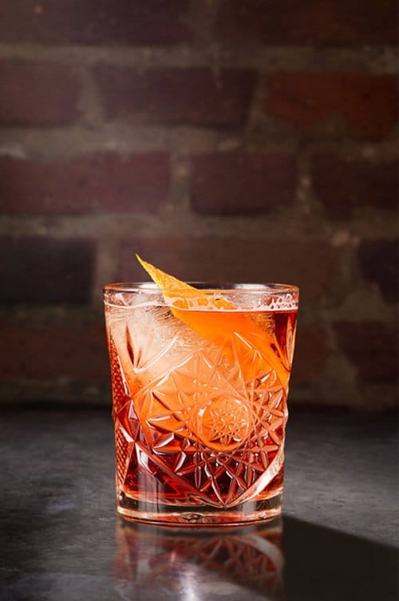

Negroni

Description
This smooth yet vigorous cocktail is one of the most basic, most ancient ones ever existed.
With three simple ingredients it seems like an easy way to make a classic, yet it can be a challenging task to make it right.
Ingredients
- Gin 1prt
- Sweet vermouth 1prt
- Campari 1prt
- Orange peel for garnishing
Steps
- Prepare a mixing glass, your ingredients, and ice
- Add the gin, sweet vermouth and Campari to your mixing glass
- Carefully place a large block of ice in the mixture
- Give it a strong whirl with your barspoon
- Pour the mix into a rocks glass through a strainger, then add a block of ice to it
- Peel a slice off an orange, press the oil around the edge of the glass, then add the peel to the drink
- Enjoy!